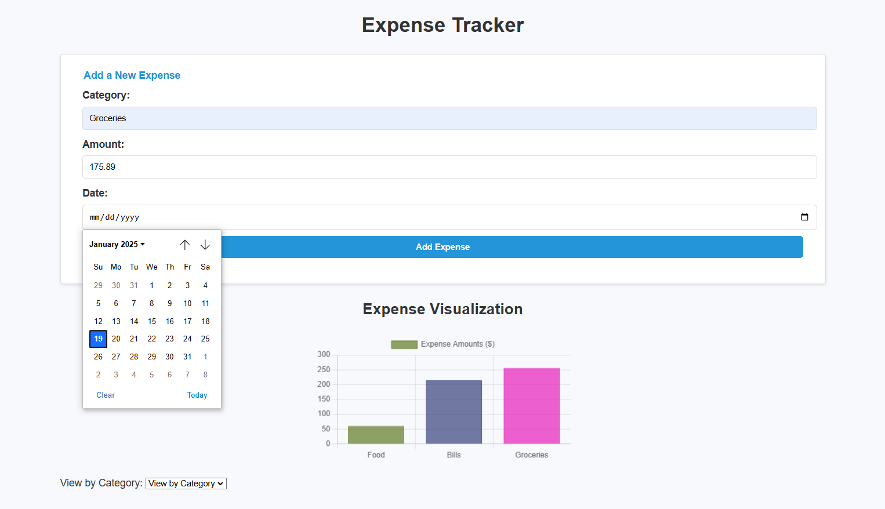
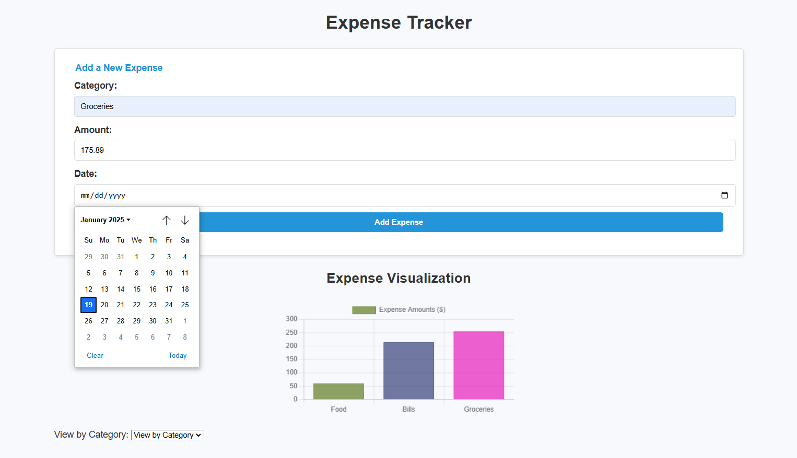
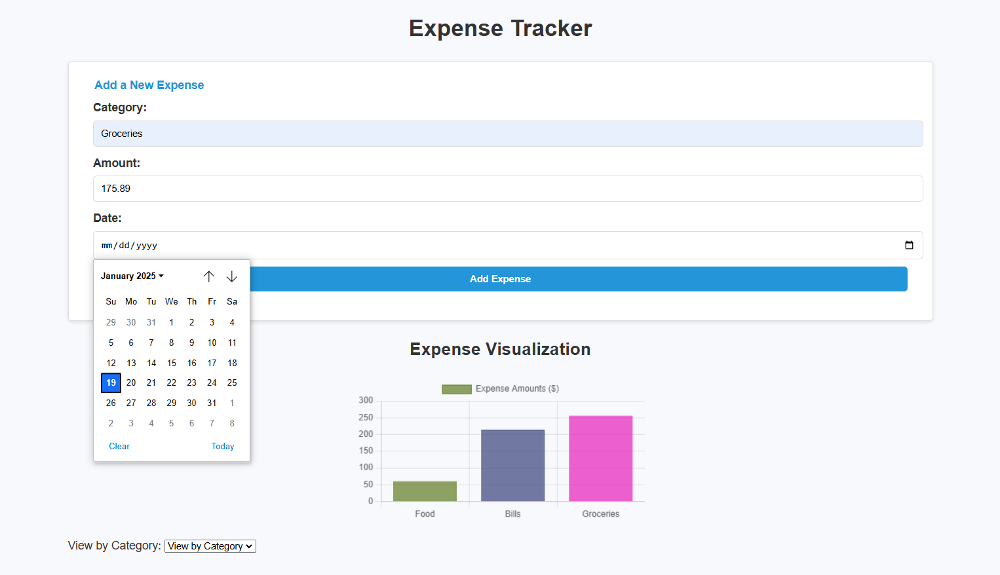

Screenshots
Here are some screenshots of the Expense Tracker:
 

The Expense Tracker is a personal finance tool designed to help users manage their budgets effectively. With this app, you can log expenses, categorize them, and monitor your spending trends over time. It's an essential tool for anyone looking to gain control over their finances.
Here are some screenshots of the Expense Tracker:

Learn more about the Expense Tracker, try it out, and download the app on its dedicated page:
Visit the Expense Tracker Page